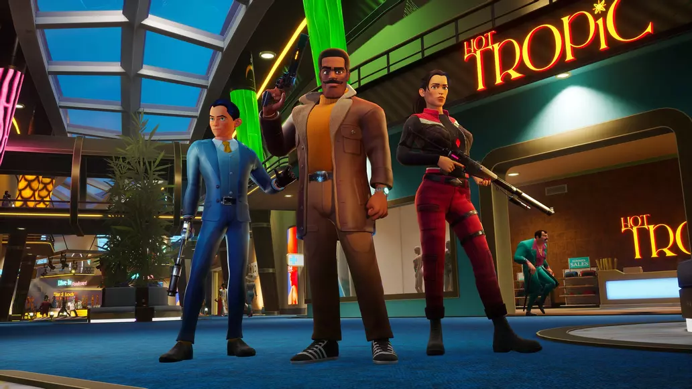

How Deceive Inc.'s Art Matches it's Game Genre and Target Audience
Apr 9, 2023Introduction
Deceive Inc. is an FPS PVP Extraction shooter. If those words don’t mean much to you don’t worry, it essentially means that the goal of the game is to get information to then get a trophy, in this case a suitcase, and then go to an extraction point to claim a prize or victory. However, Deceive Inc. has a twist which is that the players are all spies trying to deceive each other into pretending that they are NPCs(non-player characters) walking around. Because of this game and its genre, it makes sense that the game’s art, through simple, cartoony, repetitive models, appeals to a large general audience.
Deceive Inc characters from shacknews.com.
Simplicity Can be Good Thing
Though it is not overly simple, the game models and artwork are mostly simple without super hyper realistic textures. This adds to the game experience since it can help lower the entry cost to play the game for the average person while also making sense within the game’s world.
Besides that, the simplicity also adds to the player experience by making the whole game seem less overwhelming. The reason why this is a good thing is mainly because the game itself is complicated so having less distracting visuals can help players learn quicker without having to take in so much information.
The Simplicity and Cartoony Style
What makes the art style for the game special is how the backgrounds, NPCs and agents are akin to cartoons. The major shapes and colors are vibrant and bold with 70s references through fashion. With these simple and appealing shapes the game is able to appeal to a wider audience.
Player Agents and Character Designs
The player agents and character designs also lend well to the 70s cartoony theme. The most notable aspect of for example Chavez’s design is his trench coat, hair, face, and belt. His overall silhouette is boxy which has the shape language of being reliable, strong, and rigid. This makes sense with his character’s lore since he appears to be a father.
The Squire
Another notable design is the Squire. He is meant to be the youngest agent so his basic clothing of a suit and gloves perhaps show how he is trying to appear as the stereotypical spy. It could represent that is what he sees that as the ideal version of a spy or it could come from fact that he is yet to carve an identity as a new recruit. Or it could also be because the stereotypical spy design has a purpose for introducing players to the idea of a spy game. Besides this, the shape language for the Squire is lanky and thin showing his youth.
Hans
Hans' character design also reveals how he fits into the Deceive Inc universe. Since he used to be the head of a criminal empire it makes sense how he would have battle scars from a previous conflict. His taste of clothing also fits his theme with a draping expensive looking suit jacket adorning him. His arm is also made of gold while also being a shotgun. And I haven't even mentioned his shape language which is triangular shaped with wide shoulders with slimmer waist and legs, representing the danger that his past was associated with.
Repetitive models
Although the use of repetitive models in NPCs might seem strange, it fits the game since players are meant to blend in with the crowd. If NPCs were all distinct and individual then it would be harder to blend in since if there were two NPCs that looked similar next two to each other, one would assume one was a player. Besides that, there is still a good amount of variety of NPCs of different classes which are worth mentioning since they are relevant to how the game works.
How to Tell NPCS Apart
To provide some context, NPCs in the game have different classes with different kinds being allowed access into special kinds of rooms that others might not be able to. In order of rank the first is staff, guards, technicians, and then VIPs. Similarly to Valorant they are most easily distinguished by their colors since staff are usually all dressed in green, and guards in blue. VIPs however are little unique because of how they are instead elevated from normal folk because of their high fashion outfits with high necklines, asymmetrical collars, and bold shapes and colors.
Closing Thoughts
Deceive Inc. though not entirely unique in its art style or designs does a good job of utilizing the benefits of a palatable, simple, cartoony art style to appeal to a wider range of people who would be interested in a cheesy sounding spy game. If you want to try it for yourself, go for it, I've been having a lot of fun with it and if my blog was about the other aspects about the game, especially the sound design, I would elaborate even more about how it is underrated.
Works Cited
https://deceiveinc.com/